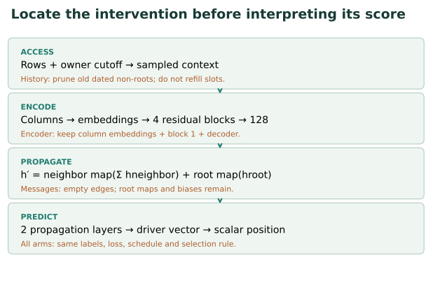
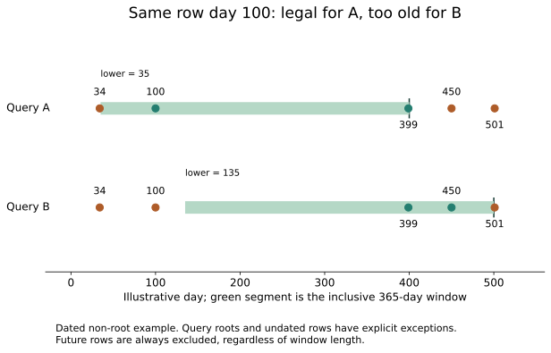
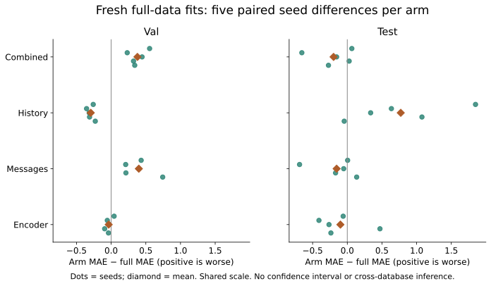
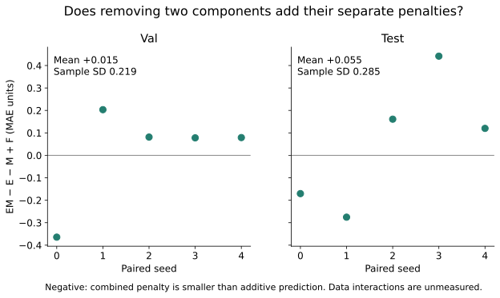

Year 4 · Quarter 3 · Lesson 148
Ablation discipline: what earns the improvement?
1 · A better score does not identify the useful component¶
Lesson 147 converted architecture claims into testable questions. Its earlier GNN–transformer comparison changed several mechanisms at once. It could compare complete procedures, but could not attribute the difference to attention. Here you will write an experiment that makes a narrower claim defensible.
Your tangible win: produce an intervention matrix, calculate paired effects and an interaction, then defend exactly what your experiment isolates. This serves our mission: establish when relational information earns its complexity with evidence a skeptical reader can inspect.
An ablation removes or replaces a component, retrains the resulting procedure, and measures the change under a declared protocol. An intervention is the actual code change. A label such as “without graph” is insufficient: does it remove neighbor features, edges, relation-specific transformations, temporal encoding, or all four?
Read RelBench v1 §3 and Appendix B.3 for the RDL pipeline and published ablations. Our named reproduction anchor is Table 7, RDL, rel-f1/driver-position. Our four interventions are newly specified course experiments, not a reproduction of a published ablation table.
In plain terms. First say what the model is allowed to know. Then say how it processes that information. Changing either can change the score, but they answer different questions.
2 · Follow one prediction through the intervention map¶
A query is a driver plus a prediction cutoff. The target is that driver's mean finishing position in the following 60 days. Query eligibility depends on participation in that future window. We evaluate this released population; we do not claim an all-driver prospective deployment population.
The baseline samples past rows from nine related tables. Each row encoder converts column values into a 128-number vector. A numerical column uses a learned linear embedding; categorical columns use embedding lookup; text uses frozen GloVe vectors. The table's four residual blocks mix these encoded columns. A residual block learns a transformation with a skip connection so some input signal can pass directly.
A relative-time vector records each dated row's age at its own query cutoff. Two message-passing layers then sum transformed neighboring representations along foreign-key relations. Each layer also transforms the destination's own vector. A scalar head maps the driver representation to a predicted position. During training, the mean absolute error supplies gradients to the trainable parts.


| Arm | Changed | Retained | Interpretation cost |
|---|---|---|---|
| Full | Nothing | Released model/protocol | Named baseline replay |
| Encoder | Keep only first of four residual blocks | Column embeddings, decoder, width, graph | Capacity, dropout calls and compute change |
| Messages | Empty every sampled edge tensor | Root maps, relation biases, encoders, time | Not the same as a separately tuned tabular baseline |
| History | Remove old dated non-root rows after sampling | Query roots, undated rows, other mechanisms | Sampling slots are not refilled |
| Combined | Encoder and message interventions together | Remaining baseline components | Tests their interaction, not data interactions |
Why retain root transformations? A GraphSAGE relation computes a transformed neighbor aggregate plus a transformed destination. Empty edges remove neighbor information; the destination transformation and neighbor-map bias still exist. Deleting the whole layer would also remove these, answering a different question.
Why retrain? Zeroing messages only at test time measures reliance of a fitted model under a distribution change. Our arms retrain from initialization, allowing the remaining components to adapt. Neither measurement is inherently interchangeable with the other.
Visible implementation. The intervention is short enough to inspect. For the shallow encoder, encoder.backbone = Sequential(encoder.backbone[0]). For no messages, each edge_index becomes edge_index[:, :0]. The notebook includes the complete underlying model and trainer, not just these two lines. Shared initialized tensors are retained, but different dropout calls can change later random-number consumption.
3 · Data access is a query-specific contract¶
In plain terms. “Only the last year” means the last year before this query, not before the newest query in the batch.
A query owner identifies which seed query a sampled copy belongs to. An entity may appear multiple times because it is queried at different cutoffs. Its copies need different context. For each dated non-root row, keep it when cutoff − window ≤ row_time ≤ cutoff. Undated rows remain; roots remain unless they violate the temporal upper bound. A year here is explicitly 365 days.
Worked example. Query A is at day 400 and query B at day 500. With a 365-day window, day 100 is legal for A but too old for B. Day 450 is future information for A and legal for B. A batch-wide maximum cutoff would give A information it should not see.


Predict before changing the window. Which rows disappear at 30 days? Which return at 365? Does the day-450 row ever become legal for query A? Reset the control and explain why its upper bound is independent of the window length.
The implemented history arm first uses the baseline temporal sampler, then deletes old non-root nodes and incident edges before encoding. It does not refill the removed sampling slots. Therefore its effect combines a shorter history with reduced sampled context. An alternative pre-sampling restriction could expose more recent neighbors; that is a different experiment. The retained graph can include legal but disconnected rows, which cannot send messages to the query.
Data contribution is conditional. An old row's removal can also remove a route to another row. This intervention measures access through this sampled graph, not the intrinsic value of one database column. Released preprocessing statistics remain fixed across arms and come from the test-censored database, not train-only materialization. Temporal filtering does not establish historical ingestion availability.
4 · Paired effects: subtract within seed first¶
MAE, mean absolute error, averages the absolute distance between prediction and target. Lower is better. For seed s, define the ablation effect as MAE(arm,s) − MAE(full,s). Positive means the ablated procedure did worse. Pairing means subtracting the two scores with the same declared seed before summarizing; it does not promise identical batches or identical initialization of removed components.
Worked example. Full MAEs [4, 5] and ablated MAEs [5, 7] give paired differences [1, 2], mean 1.5 and sample standard deviation about 0.707. Sample standard deviation describes variability across these runs. It is not a confidence interval over databases or over drivers.
Score by full query key. A driver can have multiple cutoffs. Targets [1,5] for (7,10),(7,20) and reversed prediction rows [5,3] give MAE 1 after key alignment. Positional subtraction gives MAE 3. The notebook rejects missing, duplicate, extra and nonfinite predictions before computing any effect.


| Arm | Validation MAE ± seed SD | Test MAE ± seed SD | Parameters |
|---|---|---|---|
| full | 3.2245 ± 0.0531 | 4.1931 ± 0.2428 | 5,077,249 |
| encoder | 3.1888 ± 0.0434 | 4.0937 ± 0.2673 | 4,171,777 |
| messages | 3.6235 ± 0.2263 | 4.0393 ± 0.2050 | 5,077,249 |
| history | 2.9305 ± 0.0648 | 4.9639 ± 0.6387 | 5,077,249 |
| combined | 3.6033 ± 0.0767 | 3.9954 ± 0.0561 | 4,171,777 |
All 25 fresh fits completed; 31,475 held-out predictions independently rescored. Positive paired differences favor the full baseline.
Val paired changes: encoder -0.0356 ± 0.0498; messages +0.3990 ± 0.2181; history -0.2940 ± 0.0498; combined +0.3788 ± 0.1241.
Test paired changes: encoder -0.0994 ± 0.3422; messages -0.1538 ± 0.3183; history +0.7708 ± 0.7292; combined -0.1977 ± 0.2901.
Encoder–message interaction: validation +0.0155 ± 0.2190, test +0.0554 ± 0.2850 MAE. These are mean ± sample seed SD.
Read the reversal. Restricting history improves validation MAE by 0.2940 but worsens test MAE by 0.7708 on average. Removing messages worsens validation by 0.3990 yet improves test by 0.1538. These results challenge a simple “more history and more propagation always help” story. They do not identify why the ordering reverses: population shift, sampling coverage and the preserved numerical-gradient limitation remain candidates. We do not retune on these test outcomes.
Fixed protocol. All arms use every 7,453 training query for ten epochs, five seeds 0–4, Adam at 0.005, batch size 512, two 128-wide layers and uniform temporal fanouts 128/64. Each arm selects its first validation minimum using all 499 validation queries. Final scores use the restored checkpoint and all 760 test queries; evaluation clips outputs to the training-target 2nd/98th percentiles. Final sampled validation can differ from selection-time validation.
What is not fixed? Encoder parameter count and executed computation change. Empty edges leave unused parameters, so equal total parameter counts do not mean equal effective capacity. Sampled contexts can diverge after random-number consumption diverges. These are fixed-training-protocol interventions, not equal-capacity or equal-compute competitions.
5 · Two useful parts need not contribute additively¶
In plain terms. The encoder may be useful mainly because message passing can carry its output. Remove messages first, and removing encoder depth may matter less.
Let F, E, M, and EM be the four paired MAEs for full, shallow encoder, no messages and their combination. The interaction is I = EM − E − M + F. Every letter is a score for the same seed. Equivalently, compare the encoder effect without messages, EM − M, with its effect when messages remain, E − F.
Worked example. F=4, E=5, M=6, EM=6.5. Separate penalties are 1 and 2. Their sum predicts MAE 7 under additivity. Observed combined MAE is 6.5, so interaction is −0.5. On this error scale, the combined penalty is smaller than the sum. This does not prove a biological-style synergy or provide percentages of total “credit.”
Read the interaction cautiously. The test interaction averages +0.0554 MAE with sample SD 0.2850, and individual seeds have both signs. That describes weak directional consistency across these five fits; it does not establish either independence or a reliable positive interaction.


Predict, then adjust. Keep F, E and M fixed and set EM to 7. The interaction should become zero. Set EM to 8 and explain the sign without looking at the answer. This widget uses hypothetical values; it never rewrites measured evidence.
The five-arm design estimates the encoder–message interaction only. It has no combined history/encoder or history/message arms. A full three-factor design has eight cells; further interactions remain unmeasured. One-at-a-time ablations cannot establish an additive decomposition of performance.
6 · Lab: implement the contract, then defend the claim¶
Open the student notebook. Its three live TODOs implement the owner-specific history mask, keyed MAE and paired interaction. CHECK cells reject specific faulty implementations. The mask drives a real sampled-context exercise; the scoring functions audit all author predictions. The executed solution is author-reference evidence, not proof that you completed the exercises.
The portable default runs without a GPU. Complete model, intervention and trainer definitions remain visible, with an explicit opt-in full training lane for a pinned environment. Author artifacts are embedded with a checksum so a fresh notebook can reproduce the analysis. Training is never silently triggered by a normal notebook run.
EXIT: 150–250 words. Choose one measured ablation. State the intervention, held-fixed quantities, paired result, one confound and a falsifier. Then explain the interaction sign and propose the smallest follow-up that separates shorter history from unfilled sampling slots. Do not select a new window after test inspection and call it confirmatory.
7 · Reproduction and claim boundaries¶
Executed: 25 complete ten-epoch fits on the full task; independent key/label audits; baseline original-model output replay; owner-window and intervention checks. Baseline descriptive comparisons: validation CLOSE, test CLOSE. Paper means are 3.193 / 4.022 MAE.
Gradient boundary: one real initial-batch diagnostic counted nonfinite gradient entries {'full': 512, 'encoder': 512, 'messages': 512, 'history': 512, 'combined': 512}. The released missing-value numerical path is preserved. Finite predictions and source parity do not prove gradient health; this is a limit on interpreting these fits.
Cost: conservative reservations including two pre-worker mount failures and overhead fit the approved USD 10 cap. Measured worker-body estimates and the exact reservations are in the cost ledger; they are not an itemized invoice. Browser and notebook results are recorded separately in the delivery reports.
Final delivery: default solution and pinned notebook PASS; pinned validation adds one full history seed100 fit, excluded from primary statistics, with1,259 independently checked predictions. Desktop/mobile, keyboard/reset, print/noJS and clean Git-index Pages PASS. Conservative all-attempt reservations plus overhead USD9.974748; known worker-body estimate USD0.166615, excluding unitemized costs. Live Colab/deployment NOT_CHECKED.
The source-pinned baseline is a complete selected released-protocol replay where execution succeeds. Descriptive closeness uses a frozen ±0.2 MAE band around the paper means; it is not a statistical equivalence test. Missing historical seeds/environment and documented release/paper differences prevent an exact historical-identity claim.
The same F1 test population has appeared in earlier lessons. These ablations are exploratory even though their protocol was frozen before this lesson's runs. No arm is retuned or dropped for a disappointing result. Whole-paper reproduction is NOT_RUN; learner mastery is PENDING_WRITTEN_DEFENSE. Live Colab and deployment are separate checks.
Use the reproduction contract, reference sheet and primary paper. Ask the teaching agent to review any unclear mechanism or your written defense. Lesson 149 will use disciplined evidence to examine where the thesis is weakest.
Carry this forward. Use the same discipline in Lesson 149: a weakness identifies where a procedure loses, while an intervention tests an explanation of that loss. Continue to Lesson 149.